Kingdom War
Kingdom WarKingdom War: explained from scratch, step by step
Once a week our kingdom #397 fights another kingdom. All week we collect points, on Saturday we fight for the main city. Everything is here: what it is, when, where to tap and what exactly you should do.


Sun–Fri: collecting points
Our kingdom earns points from ordinary things: 10 hits on the Demon King, Alliance Duel wins, plundering the enemy's caravans.
Friday: the count
Whoever has more points attacks on Saturday. Whoever has fewer defends at home.
Saturday: the battle
Moscow time (12:00 game time). The battle lasts up to 4 hours — until 21:00 Moscow.

All of ours — one team
In Kingdom War all alliances of kingdom 397 are on one team. The game simply won't let you hit your own.
What happens on each day of the week
Server time is 5 hours behind Moscow. A new game day starts at 05:00 Moscow. Today is outlined.
collecting
Demon King: hit with Warriors. Duel: Raven.
collecting
Demon King: with Warlocks. Duel: building, gold caravans.
collecting
Demon King: with Rangers. Duel: research.
collecting
Demon King: with Warriors. Duel: heroes.
the count
At night it is decided who attacks. Heal everyone, squads home.
battle 17:00
The battle for the Royal City, 17:00–21:00 Moscow.
new week
No Demon King. We collect points again.
What Kingdom War is — in plain words
If you have never played Kingdom War, read these three cards. After that everything will make sense.

Server = kingdom
Each server in the game is a separate world with its own map, its own alliances and its own king. Our world is kingdom 397. In the game a server is called a «kingdom».
KvK stands for «kingdom versus kingdom»: our world against another world.

Royal City (the throne)
A big castle in the very center of the map, coordinates X 500 · Y 500. Around it stand 4 towers.
On Saturday two kingdoms fight for this city. Whoever holds it wins.

Attackers and defenders
The kingdom that collected more points during the week attacks: on Saturday its players move to the enemy kingdom and storm their Royal City.
The other kingdom defends: it doesn't go anywhere and holds its own city.
What to tap — step by step
Tap any screenshot to see it full screen.
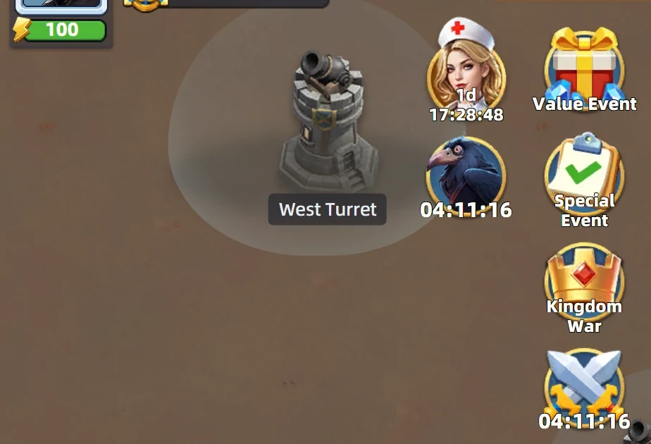
Open the «Kingdom War» window
The icon is a gold crown, on the right of the main screen, in the column of round icons. The label under it says «Kingdom War».
A bit lower in the same column are crossed swords. That is the Alliance Duel, don't mix them up.
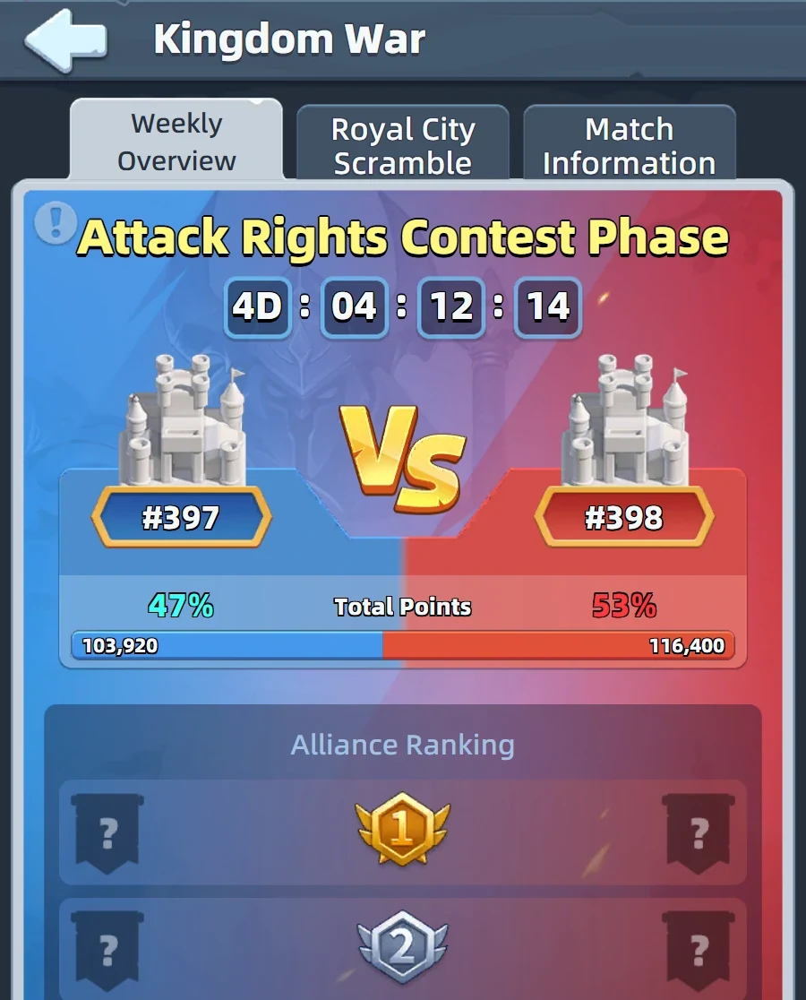
«Weekly Overview» — the week's score
Our kingdom is on the left (blue), theirs on the right (red): how many points each has, and in percent.
«Attack Rights Contest Phase» means the week is on and it is being decided who attacks on Saturday.
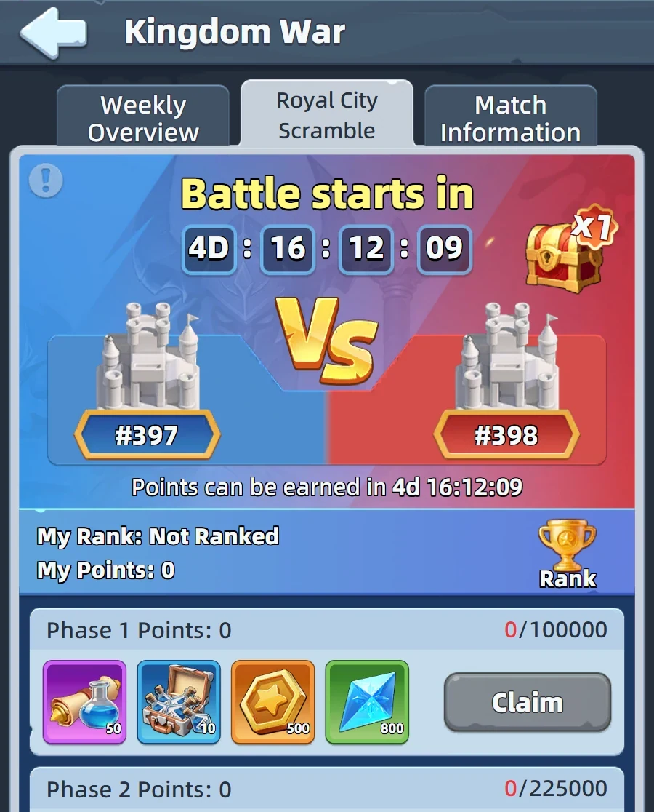
«Royal City Scramble» — your chests
Here is the timer to the battle and your personal points. Reached 100,000, 225,000, 350,000 or 475,000 — tap «Claim».
Personal points are not kingdom points. Only your account gets them. What they are given for — below.
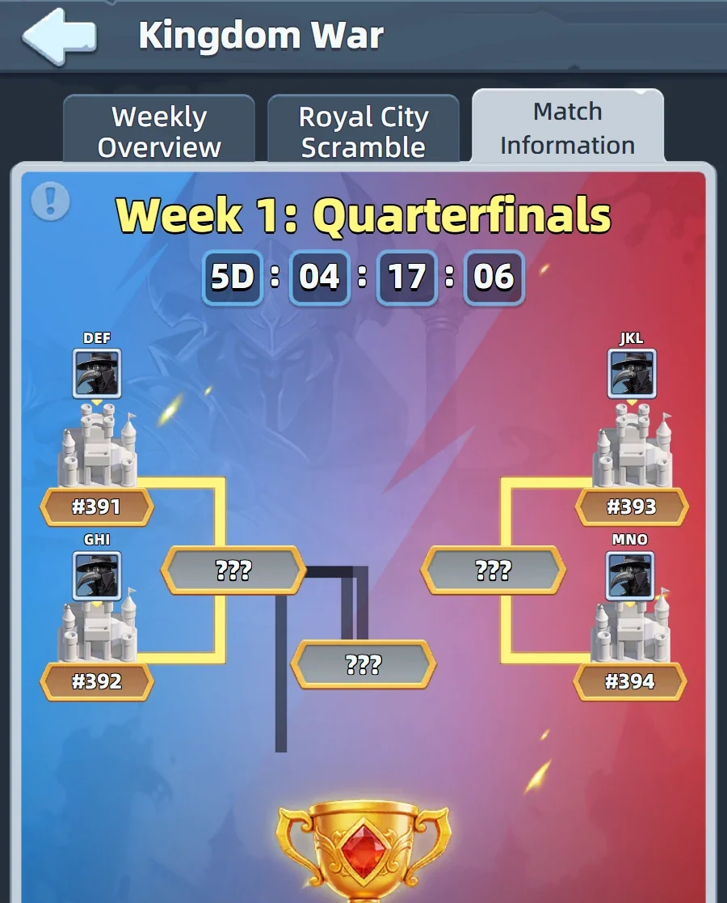
«Match Information» — who we are fighting
A bracket like at a championship: from 4 to 8 kingdoms, pairs, quarterfinal, semifinal. The loser isn't knocked out — they play other losers.
At the bottom center is the «Grouping» button: the list of kingdoms in the group. Through it you can look at the enemy kingdom's map.
How our kingdom earns points
Kingdom points are not Might. They are wins. Any player can do each item below.
 250,000our total damage to the Demon King is higher than the enemy's. Hit all 10 times every day
250,000our total damage to the Demon King is higher than the enemy's. Hit all 10 times every day 50,000an alliance win in the Elixir Scramble30,000your alliance wins the Duel for the day (+6,000 if the Duel's best player is ours)
50,000an alliance win in the Elixir Scramble30,000your alliance wins the Duel for the day (+6,000 if the Duel's best player is ours) 120for every plundered caravan of the enemy kingdom, 4 times a day
120for every plundered caravan of the enemy kingdom, 4 times a dayAnother 150,000 — if the #1 player by personal damage to the Demon King is ours, and 2,200 — for each of our players who takes 1st place in the Survival Battle (needs Sanctuary 15+ and at least 1,000 battle points).
Three must-dos during the week
10 hits on the Demon King (every day except Sunday)
The Demon King appears on the world map. Each day he is a different «faction» (his type), and certain heroes are stronger against him:
| Day | Who the Demon King is today | Hit with heroes |
|---|---|---|
| Mon and Thu | Warlock Blight | Warriors |
| Tue and Fri | Ranger Blight | Warlocks |
| Wed and Sat | Warrior Blight | Rangers |
| Sun | No Demon King | |
The right faction hits him noticeably harder — that is written in the event rules themselves. The game doesn't say exactly how much, so go by the faction, not by percentages. How to build a squad — in Squads → Demon King.
4 plunders of the enemy kingdom's caravans
The cheapest thing you can do for the kingdom: 4 plunders a day, that's 480 points. Takes a couple of minutes.
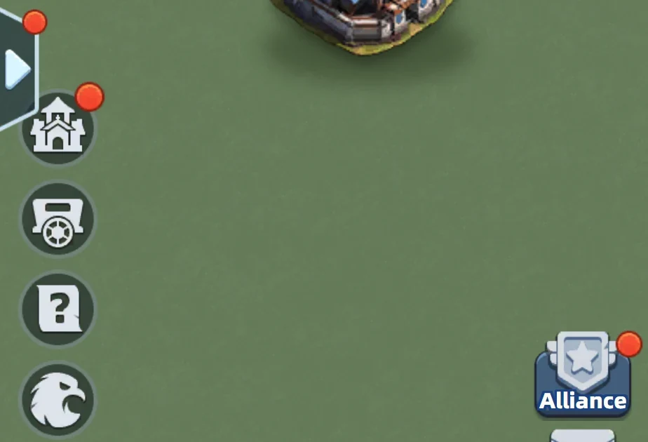
Tap the cart button
It is on the left, in the column of round buttons, second from the top. The Caravan Trade window opens.
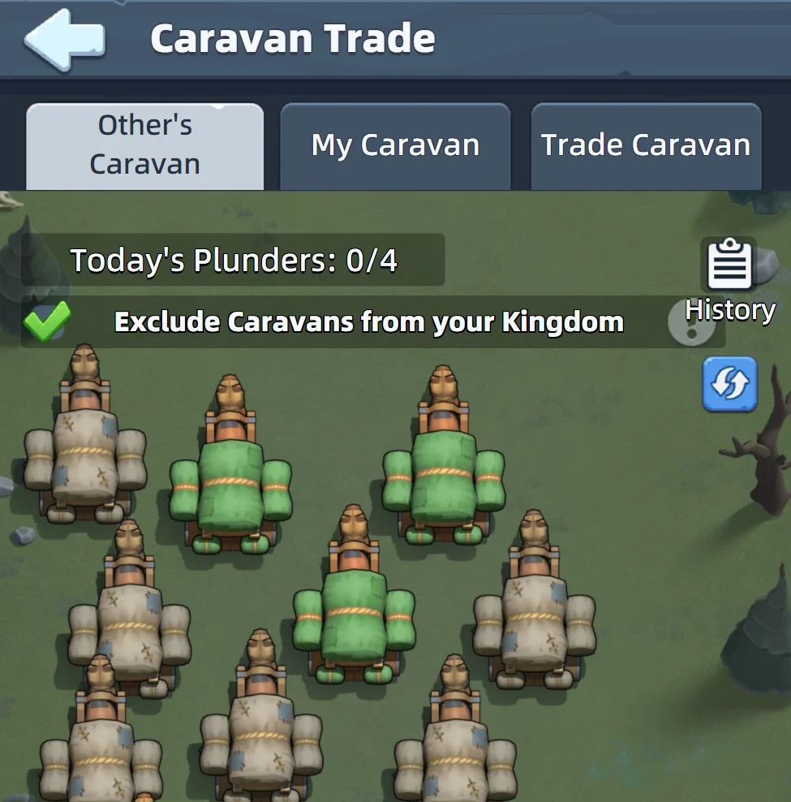
The «Other's Caravan» tab
Tabs at the top of the window: «Other's Caravan», «My Caravan», «Trade Caravan». You need the first. Under the tabs the game shows how many plunders you have done: «Today's Plunders: 0/4».
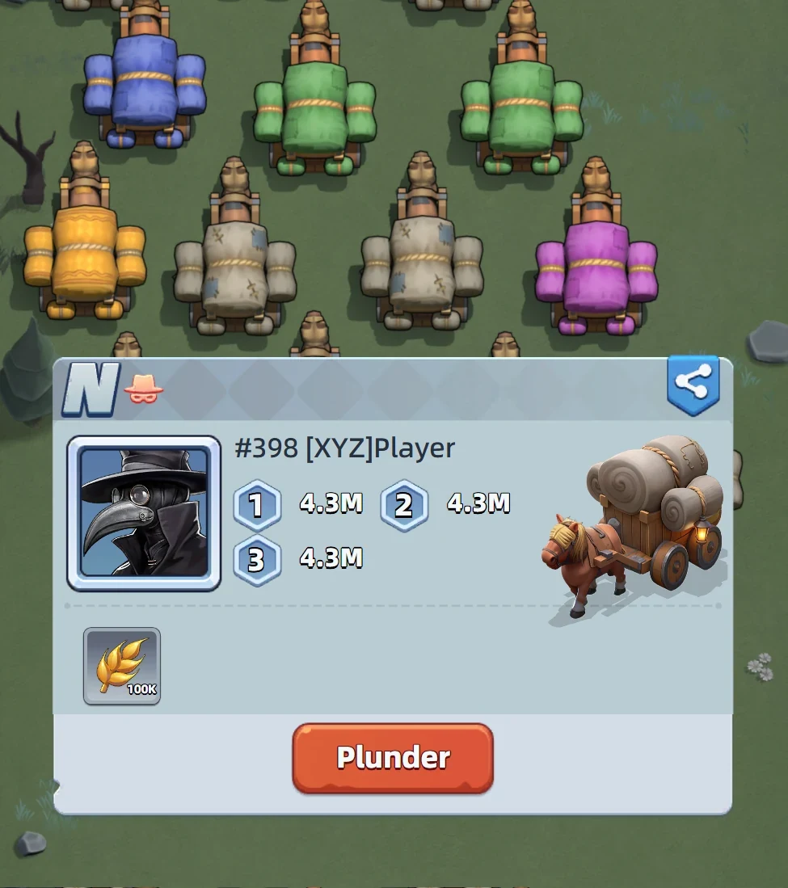
Tap a cart and check the kingdom
A card opens at the bottom. The number before the name (#398 in the picture) is the cart's kingdom. You need the number of the kingdom we are fighting this week: it is in the «Match Information» tab. #397 is ours, never touch them.
The red «Plunder» button
Only successful plunders count: if the cart fought you off, no points.
More about caravans and the «we don't rob our own» rule — in Rules → Caravans.
Alliance Duel quests
What happens hour by hour
At the top — Moscow time, under it — server time. Server time is 5 hours behind Moscow: when it is 17:00 in Moscow, it is 12:00 on the server.
The count is over. It is clear who attacks.
Attackers move to the enemy. For free.
The «hunt» begins: personal points for killed enemies.
Everyone online, wounded healed, squads home.
Battle. Protection is removed from the city and towers.
End of the battle. City not taken — the defenders won.

On Sunday at 05:00 Moscow (24:00 game time) everything ends: rewards arrive by mail, all cities return to their kingdoms by themselves.
Where to jump
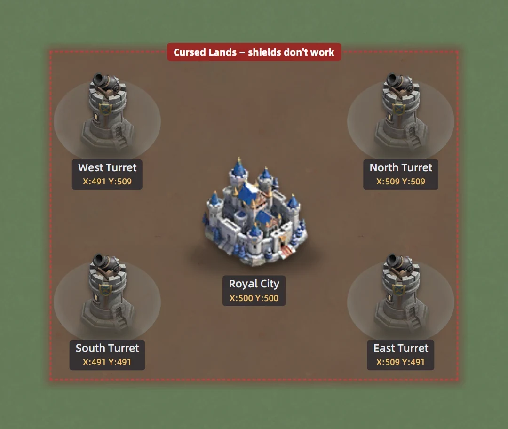
This is what the battle zone looks like from afar. In the game you can't zoom out the map this far — the picture is assembled from pieces of the game itself: ground, towers, the Royal City and labels as on the map. Which tower is where — check by the label above it («West Turret», «South Turret»).
The Royal City stands in the center of the defending kingdom's map. Around it are 4 towers. The whole zone around is called the Cursed Lands.
Why the towers first, then the city
To win, you must hold the city until the capture bar reaches 100%. Without towers that is 2 hours in a row. Each tower of ours speeds up the capture:
| How many towers are ours | How long to hold the city |
|---|---|
| none | 2 hours |
| 1 tower | 1 h 36 min |
| 2 towers | 1 h 20 min |
| 3 towers | 1 h 08 min |
| all 4 | 1 hour |
How exactly a tower shoots
This is the most confusing part of Kingdom War, so we go word by word through what the game itself says (the tower capture window).
Who it shoots at
A tower hits only enemy troops sitting inside the Royal City. Not those moving across the map, not players' cities, not squads in the field. Only the Royal City garrison.
And one more important thing: if we hold the Royal City, the tower doesn't shoot at all. It is needed for exactly one thing — knocking out an enemy dug into the city.

How often
Once every 10 seconds — that is if the tower has few of our squads.
For every 5 squads in the tower garrison the interval is cut by 1 second, but by no more than 4 seconds in total. So the limit is a shot every 6 seconds, and for that the tower must hold 20 squads.
That is why the leader drives everyone into the tower garrison: it is not «just standing there», it is literally the rate of fire.
How much it kills
Each shot destroys 1% of troops of the squad's maximum capacity — in every enemy squad sitting in the city.
Sounds small, but count: 4 towers, a shot every 6–10 seconds, four hours of battle. The enemy in the city gets wiped out without a single attack of ours, just by time.
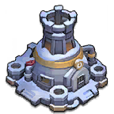
Hence the whole Saturday tactic. First the whole alliance takes the towers with rallies and fills them with our squads — the towers start shooting the enemy in the city. When the city is weakened, we rally it. Once taken, the towers go quiet (the city is ours already) and start working on capture speed: with four towers you need to hold the city for 1 hour instead of 2.

The flip side. The enemy does exactly the same to us. If we sit in the Royal City but give up the towers, their 4 towers will knock out our garrison every 6 seconds. So «lost a tower — retake it immediately» isn't the leader nitpicking, it is the difference between winning and getting knocked out of the city by the end of the battle.
How to move your Sanctuary to the right spot on the map
Two actions: first find the spot on the map (methods 1–2), then move the Sanctuary there (the last step). Below — how to do it for free in Kingdom War.
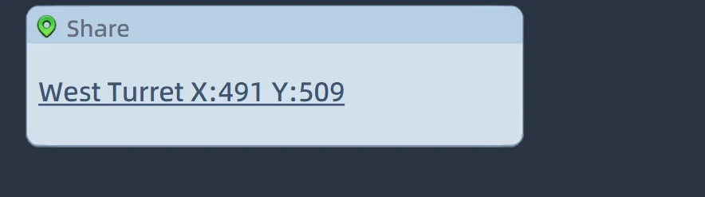
Coordinates from the alliance chat
The leader posts the spot in chat: their chat has a Share Coordinates button. A clickable link with numbers appears in chat.
You just tap it. The game asks: «Proceed to this coordinate?» — agree, and the map jumps exactly to that place. This is not moving the Sanctuary, just looking at the right spot.
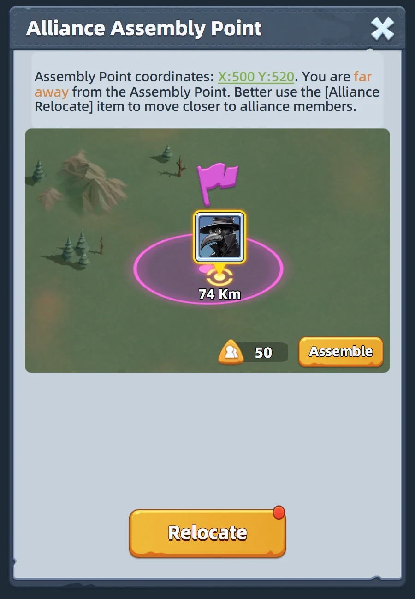
Alliance Assembly Point
Only R4 and R5 can set it. The game describes it like this: it is the priority place where members move for a rally on the alliance's command.
If you are far from it, the game itself says: «You are too far from the assembly point, using an Alliance Relocate is recommended». With that item the city moves right next to your allies.
In the «Alliance Assembly Point» window the bottom button is Relocate — it moves your city to the point. The «Assembly» button on the map is a request for comrades to gather at the point.
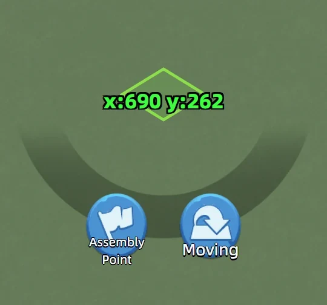
Tap an empty tile → «Moving»
Got your view to the right place — tap an empty tile. Its coordinates and two buttons appear: Assembly Point and Moving. Tap Moving (frame).
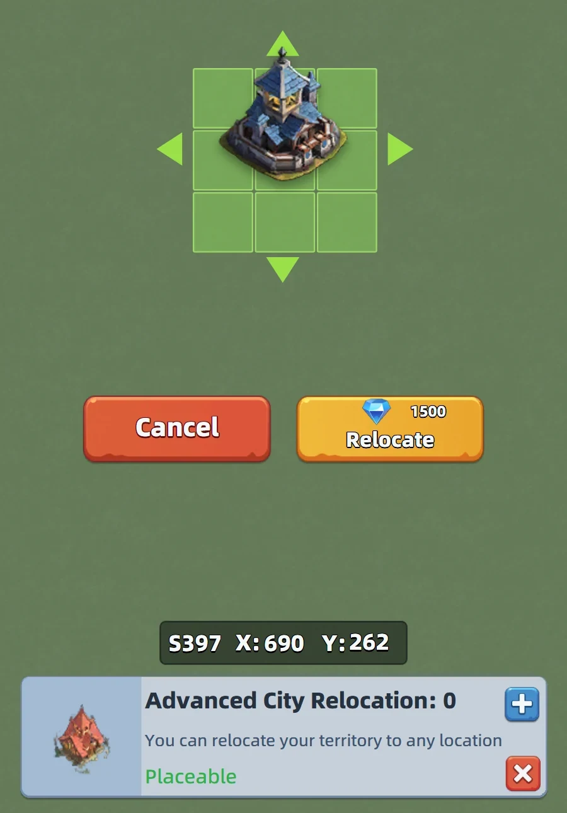
Move the Sanctuary → «Relocate»
The Sanctuary is placed on the tile as a «preview», with green tiles and arrows around it (you can shift it). At the bottom — the kingdom number and coordinates, the «Advanced City Relocation: N» card (how many relocation items you have) and the status: green — you can place it there, gray — the tile is taken. Tap Relocate (frame).
Free Sanctuary relocation during Kingdom War. Moving between kingdoms is free, so don't spend a «Direct Relocate» or Diamonds. First move the Sanctuary to the enemy kingdom, and from there straight back home — to the spot on your map that you need. These are two cross-kingdom moves, both without items. Between them the game keeps a 5-minute cooldown on cross-server relocation. Moving to the enemy kingdom opens on Saturday at 05:05 Moscow for the attacking kingdom.
Rally, garrison, reinforcement — explained fully
These are three different actions, and people mix them up all the time. The difference is simple: a rally hits, a garrison sits inside, reinforcements are sent. Below is each one separately, with all the details.
A rally is a hit by several players at once
One player starts the rally
They tap the target (a tower, the Royal City, a monster) → the Initiate Rally button. In the window they pick the Gathering Time — how long to wait for the others. The rally appears right away for the whole alliance in the «Alliance War» window, and a «Rally Invite» card arrives in chat.
That is the countdown. Each rally has its own. While the countdown runs, troops stand at the assembly point and don't fly anywhere.
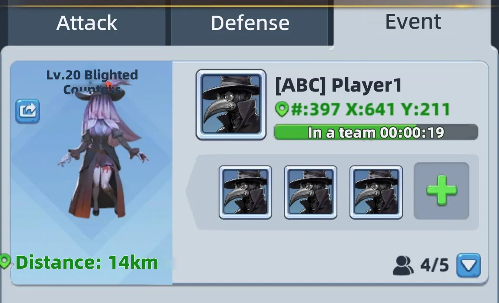
«Alliance» → «Alliance War» → the green plus
The Alliance button at the bottom right of the main screen → Alliance War. Three tabs at the top: Attack — our alliance's rallies against enemies, Defense — enemy rallies against us, Event — rallies against event monsters (in the picture — the Blighted Countess).
In the rally card: on the left the target and the distance to it, on the right who started it, their coordinates and the «In a team» bar — how long until launch. Below are the participants' squares and a green plus — tap it and pick a squad to join. «4/5» — how many slots are taken.
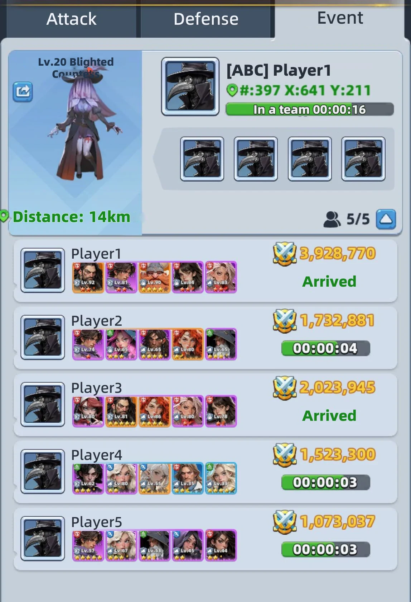
Squads gather — and everyone hits together
The arrow at the bottom right of the card expands the list: each participant, their five heroes and squad Might. «Arrived» — the squad is already at the assembly point, a timer — still flying. When the «In a team» bar runs out, all gathered squads fly to the target as one crowd and hit in one strike; everyone gets the battle report.
While the countdown runs you can recall your squad: your row in the list has a red cross. If you started the rally yourself, there is also a cross in the corner of the card — it cancels the rally.
The main trap. The game won't let you into a rally if your squad physically can't arrive before the countdown ends — it says «Not enough time to join the rally before it starts». That's why in Kingdom War everyone keeps their cities next to the assembly point: the closer you are, the more rallies you make it into.
What else to know about rallies
- You can't start a rally alone: at least 2 participants are needed.
- Only one rally can go to a target: if allies have already started one — join theirs, yours won't be created.
- A rally has a participant limit. Late — you won't fit, wait for the next one.
- Starting a rally on a monster costs Stamina, joining is free. So it pays for weaker players to join rather than start.
- A newcomer to the alliance can't use rallies for the first few hours after joining.
A garrison — your squad sits inside a building and holds it
What it looks like step by step
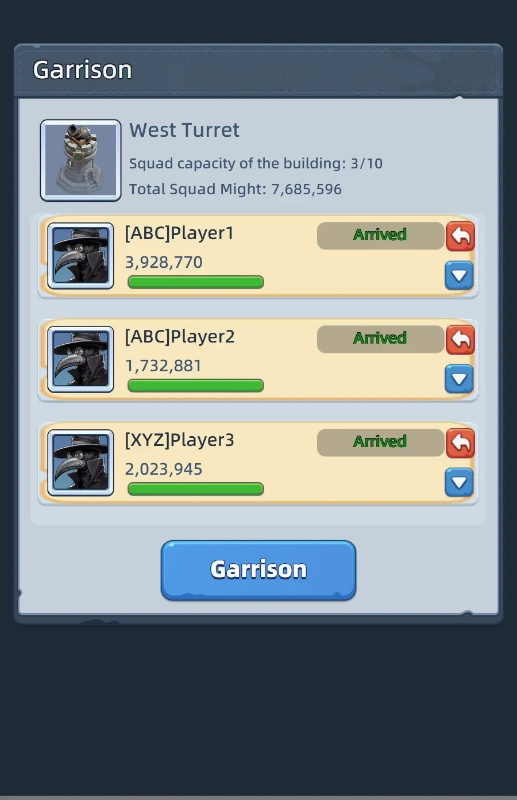
The «Garrison» window in battle: who sits in the tower and «Squad capacity of the building».
On Saturday from 17:00 to 21:00 Moscow. On ordinary days tapping the Royal City only opens its info and the king's «Manage» button — there is no garrison there (that's how it should be — see «King and posts»).
If our kingdom holds the tower or city — send the squad inside, to our people. If the enemy holds it — you can't get inside, the building has to be retaken with a rally first.
It lists the squads sitting in the building, each with «Arrived» or travel time, and the line «Squad capacity of the building: 3/10» — how many squads are inside and how many fit. Full — the game says «Garrison Full», look for another building. Your squads are recalled from there with the «Repatriate» button.
While your squad is in the garrison of the Royal City or a tower, you get +25 personal points every second. That's 90,000 points an hour without a single fight.
The easiest way for a weak player. You don't fight, don't lose troops for nothing, you just sit inside our building and earn more than half the alliance. Over a 4-hour battle — up to 360,000 points (25 points × 3600 seconds × 4 hours). But all stage rewards of the «Royal City Scramble» in our Kingdom War needed about 1.5M personal points — a garrison alone won't get you that far, you also need rallies.
But it isn't free. When the enemy rallies a building, they hit exactly the garrison — everyone inside, including you. And towers captured by the enemy hit the Royal City every 10 seconds and knock out some troops from everyone garrisoned there. You can lose troops. So the garrison gets a squad you don't mind healing, and the strongest one is kept for rallies.

The more of our squads in a tower, the more often it shoots: for every 5 squads the tower hits the throne 1 second more often (fastest — once every 4 seconds). A squad can be taken back from the garrison at any moment. If the building is about to fall and your Infirmary is full, better pull the squad out in advance.
Reinforcement — your squad goes to defend an ally's city
Reinforcement — your squad flies to another player's city and stands there with their troops: when that city is attacked, your squad defends it.
Who you can send to: only members of your own alliance, and that player must have an Embassy built. Without it the game says: «The target needs an Embassy for reinforcements». You can't send reinforcements to a player from another alliance — even from our kingdom: the game only offers «Attack» or «Rally».
To buildings on the map (towers, the Royal City) reinforcements also go only where our people stand: «Cannot reinforce buildings not occupied by allies».
How reinforcement differs from a garrison
| Garrison | Reinforcement | |
|---|---|---|
| Where | Into a building on the map: a tower, the Royal City | Into an alliance member's city (they must have an Embassy) |
| Kingdom War points | +25 per second | No points for standing there |
| What for | Hold the building and collect personal points | Save an ally who is being rallied |
| Risk | Losing troops when the building is rallied | Losing troops if the defense didn't hold |

When NOT to send reinforcements. If an ally is facing a rally they clearly can't withstand, your squad will just fall together with theirs. A lost defense means lost troops for everyone inside. Send reinforcements only when the leader said «we hold so-and-so», not out of pity.

Scout is a separate action: tap a target and send a scout to see how many squads and troops it has inside. Always scout before attacking a strong player. If the target has a shield, the game says: «Target territory is shielded, cannot attack or scout!»
We attack or we defend — what to do
Buy healing speedups
What they look like: silver «forward» arrows with a red first-aid kit. In the game they are called «Healing Speedup», with the time in brackets:
Where to get them: the «Alliance» button at the bottom right → the Alliance Shop, bought with Alliance Coins.
Don't spend them before Saturday. In battle the Infirmary fills up in minutes, and without speedups you are simply out.
Heal everyone and gather your squads
The Infirmary must be empty: new wounded will go there in battle, and if there is no room they die forever.
Bring all squads home from gathering. A squad in the field is free loot for the enemy.
Move the Sanctuary to the enemy
That's 00:05 server time. The move is free. Put the Sanctuary at the spot the leader gave, not just anywhere.
Going to sleep — don't leave your city in the mud (in the Cursed Lands). Shields don't work there: they'll burn it, the enemy gets +50,000 points, and you get thrown to a random place.
Waiting for the battle to start
Personal «Royal City Scramble» points only start dripping when the battle starts — at 17:00 Moscow (12:00 server time). Until then the Kingdom War window says «Points can be earned in …» with a countdown.
We don't go anywhere alone: raiding a strong player means losing troops and a gift to them. Wait for the leader's command.
Everyone online at the assembly point
Squads healthy, Infirmary empty, city next to the assembly point. The leader says who goes to which tower.
Standing close matters: you won't be let into a rally if your squad can't arrive within the gathering time.
We take the towers
The leader starts a rally — you tap the green plus in «Alliance War» and send your strongest squad.
Tower taken — free squads go straight into its garrison. The tower starts shooting the enemy in the city, and you get +25 points per second.
Then the Royal City
Once the towers are ours, all rallies go to the city. Taken — we garrison it and hold. With four towers 1 hour is enough instead of two.
Heal little by little
The wounded go back home. Heal in small batches so speedups don't get stuck on one long heal, and go straight back to battle.
Same thing: healing and speedups
Heal everyone, Infirmary empty. Buy «Healing Speedup» in the Alliance Shop — silver arrows with a red first-aid kit:
Whoever goes to sleep puts up a shield. We are at home; outside the Cursed Lands shields work normally.
The enemy comes to us
Don't send squads to gather resources: a shield protects the city, not squads in the field. They'll be picked off one by one.
Keep the city shielded until the battle starts.
Everyone online
The leader assigns: who sits in the Royal City, who in which tower. Remember your target in advance.
We occupy the city and towers
At 17:00 protection is removed from the city and towers. Send your squad into the garrison where the leader said.
The more of our squads in a tower, the more often it shoots: for every 5 squads — a second faster.
Don't give up the towers
Each enemy tower speeds up their capture of the city and shoots our garrison inside. Lost one — gather a rally and retake it right away, not «later».
Run the clock
We don't need to kill anyone. We need the enemy not to reach 100% capture in 4 hours. Time ran out — we won.
Every minute the city is ours works for us.
How to rack up your points
These are your points for the chests in the «Royal City Scramble» tab. Here is what they are given for — as written in the game itself:
| What you did | Points |
|---|---|
| Your squad in the garrison of the Royal City or a tower — every second | +25 / sec |
| Captured a territory (city) of a player from the enemy kingdom | +50 000 |
| Killed an enemy level 1 soldier in the Royal City or a tower | +12 |
| Reduced the defense of an enemy city on their territory by 1 | +10 |
| Killed an enemy level 1 soldier in the Cursed Lands | +6 |
| Your soldier was badly wounded or died fighting the enemy in the Cursed Lands | +6 |
| Killed an enemy level 1 soldier anywhere | +2 |
| A tower where your troops stand killed a soldier | +1 |
Soldiers above level 1 give more points.
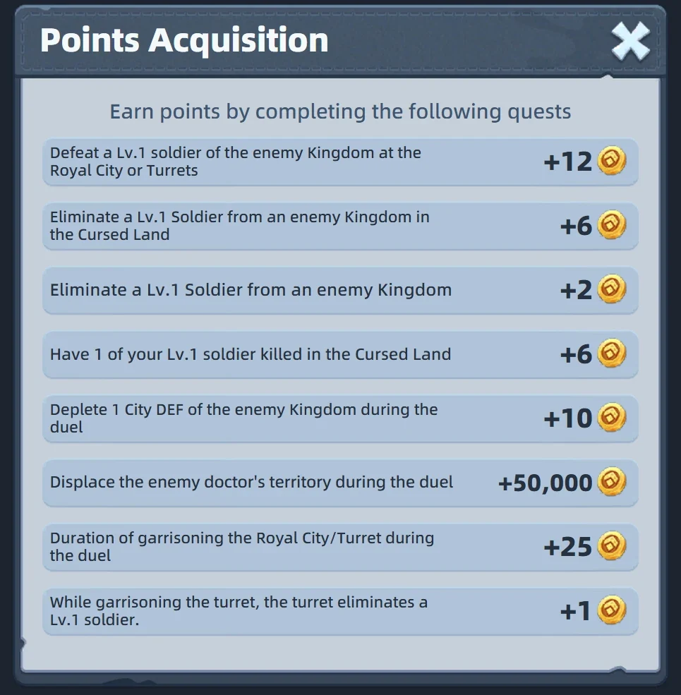
The «Points Acquisition» window in the current version of the game. The circled line matters more than all the others: holding the Royal City or a tower, i.e. a garrison, +25 per second.
What you should do
| Who you are | What to do |
|---|---|
| Weak or a beginner | Put a squad into the garrison of a tower or city held by our kingdom: +25 points per second without fighting, up to 360,000 in 4 hours (and all stage rewards in our Kingdom War needed about 1.5M). Join the leader's rallies. Keep your city shielded and outside the Cursed Lands. |
| Average | Rallies on towers and the city. Heal little by little and come back. Between rallies — garrison. |
| Strong | Hold the city and towers under attack, start rallies. On command — hit enemy cities in the Cursed Lands. |

Points for enemy cities. During the battle, a successful attack on a player's city from the enemy kingdom removes its defense: +10 personal points for each unit of defense removed. If you push the city to the point where it gets displaced («displace the enemy Doctor's territory») — +50,000. Both lines are in the «Points Acquisition» window. Hit only those you can handle and only on the leader's command: a lost attack means wounded troops and points for the enemy.
Win-streak rewards are given only to those with more than 50,000 personal points. Anyone who joined the throne battle even once gets a participation reward.
Short commands in chat
Last Saturday was a mess because everyone decided for themselves. Let's agree: one person writes commands — the battle leader, the rest follow. Nobody types coordinates by hand or searches the map: the leader posts the spot as a link, you tap it.
| Team | What to do |
|---|---|
| TP + link | The leader taps «Share» on the right spot in chat — a blue link with coordinates appears. You tap it → «Proceed to this coordinate?» → yes. The map jumps to that spot: tap an empty tile next to it and move your Sanctuary there (how — in the section above). |
| TP RALLY POINT | Move to the Alliance Assembly Point set by R4/R5. If you are far away, the game itself offers «Alliance Relocate». |
| RALLY W | A rally on the West Turret is about to start — tap «Join». The letters are compass points: N — North, S — South, W — West, E — East Turret, CITY — the Royal City. |
| GARRISON E | Send a free squad into the garrison of the East Turret. |
| HEAL | Everyone heal the wounded while it's quiet. |
| BACK | Fall back. Recall squads, don't chase the enemy. |
| SHIELD | Whoever is outside the Cursed Lands and leaving — turn on a shield. |
This is what caused the chaos
A solo hit on a strong player or a tower — almost all troops end up in the Infirmary. Only with a rally, on command.
Got dragged into their crowd — gave them points. Stick with your own.
Shields don't work there. The city gets burned, the enemy gets +50,000, and you get thrown to a random place.
Infirmary full — every new wounded soldier dies forever right away.
A shield doesn't protect squads outside the city. Bring everyone home before Saturday.
Save healing speedups for Saturday.
Friday evening checklist
The checkmarks are remembered on your phone.
The «Royal City Scramble» inside our kingdom
What kind of battle it is
Besides Kingdom War, there is also an ordinary battle for the Royal City inside our kingdom — without another kingdom. It takes place on Fridays at 17:00 Moscow (12:00 game time) and lasts 8 hours. Here alliances of our kingdom fight each other, and the leader of the winning alliance becomes the king of the kingdom.
An alliance with a level 6 city can take part in the throne fight. Usually these are top alliances, and the fights are often pre-arranged.
How a regular player can collect all the rewards
- Move to the «mud» zone around the Royal City.
- Attack resource tiles with players marked with a red hammer using your weakest squads (or stand on a tile and wait to be attacked).
- Heal only 200–300 troops at a time — that uses the fewest speedups.
- Reached 100,000 Honor Points — stop. That is enough for all event rewards.
The one-faction squad bonus (up to +20%) turns on only after the first such «Royal City Scramble» in the kingdom.
The Royal City: king, queen, ministers
After the first capture of the Royal City, the leader of the alliance holding it becomes king, and posts open in the kingdom — the queen and five ministers. Each post gives its holder big bonuses: to building, research, training, healing speed, to production. Posts are not permanent: they pass from player to player in turn, and any of us can get one.
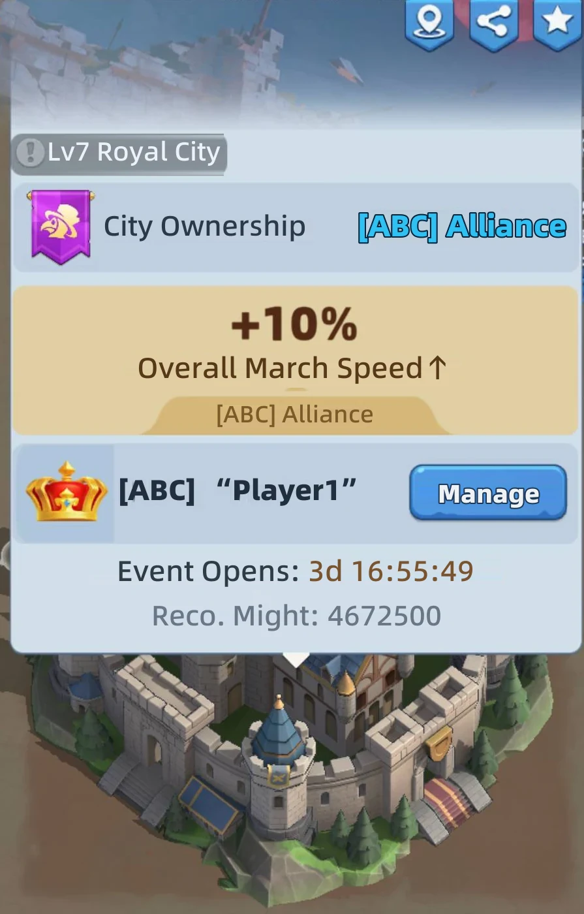
Tap the Royal City
It is in the center of the kingdom map. In the menu: city level, «City Ownership» — which alliance holds it, and the bonus for that alliance (now +10% march speed). Below — the king and the Manage button. «Event Opens» — how long until the next battle for the city.
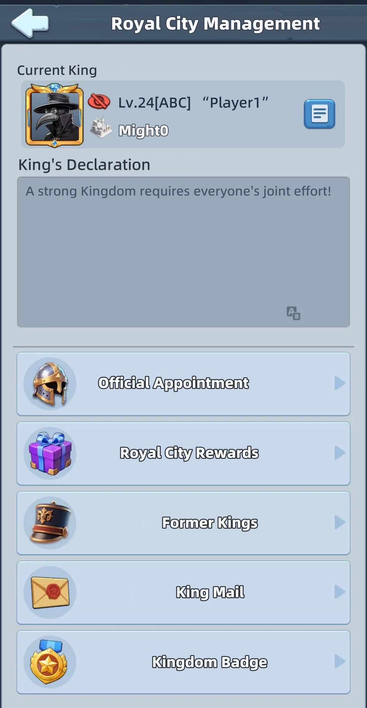
«Manage» → «Official Appointment»
The «Royal City Management» window: the current king and their announcement to the whole kingdom. Below — «Official Appointment» (posts), «Royal City Rewards», «Former Kings», «King Mail» (the king's letter to everyone in the kingdom) and «Kingdom Badge».
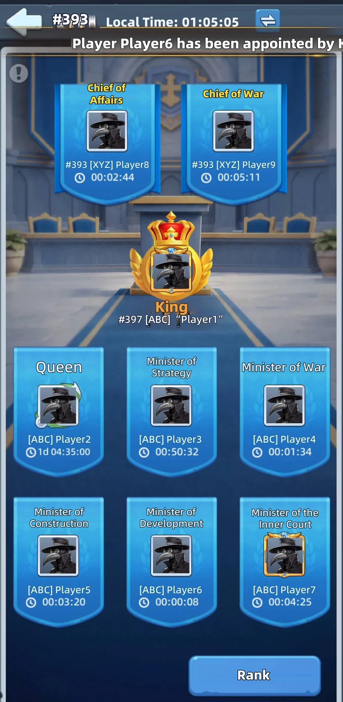
The hall of posts
The king is in the center, below are the queen and five ministers. Under each — who holds the post now and a timer: how long they have left. When time runs out, the post passes to the next in line by itself. Tap the post you want.
The two top ones — Chief of Affairs and Chief of War — appear only if our kingdom won the Kingdom War as the attacker: then the king becomes King of Battle, and the kingdom temporarily gets these two posts with their own bonuses.
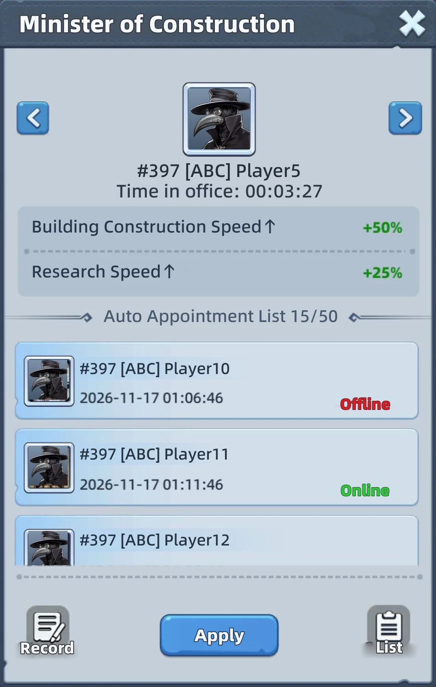
«Apply» — and wait your turn
In the post window: who holds it and how long they have been there, what bonuses the post gives, and the «Auto Appointment List» — a queue of up to 50 people, with the date and time each one takes office, and who is online now. Tap Apply — you join the end of the queue. The side arrows flip through posts, «Record» shows who held it before.
What each post gives
| Post | Bonus to the holder | When to take it |
|---|---|---|
| Minister of Construction | Building speed +50%, research +25% | Before a long Sanctuary or big building upgrade |
| Minister of Development | Research speed +50%, building +25% | Before a long research in the Lab |
| Minister of War | Training capacity +20%, training speed +20% | Before training a big batch of troops |
| Minister of Strategy | Infirmary capacity +20%, healing speed +20% | After Kingdom War and big battles, when the Infirmary is full |
| Minister of the Inner Court | Grain, Timber and Herb production +100% | When you need resources |
| Queen | Building speed +20%, research +20%, training +10%. Helps the king assign posts and distributes treasury resources | Appointed by the king, usually for a long time |
| Chief of Affairs and Chief of War | Their own stat bonuses | Only when our king is the King of Battle |
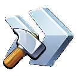
Each post lasts exactly 5 minutes. Then it automatically passes to the next in line. The term for each post is set by the king; our ministers sit for 5 minutes, the queen longer. The queue shows exactly when you take office — be in the game at that minute.

How to get the most out of 5 minutes. The speed bonus counts when a process is started. So save up resources in advance, and when you are «Minister of Construction» — start your longest upgrade right away; as «Minister of Development» — your longest research; as «Minister of War» — training at full capacity.
Queue rules. You can apply for only one post at a time. Cancelled an application — you can apply again after 30 minutes. You need a high enough territory level, otherwise the game won't let you apply. While the hall has no king, applications are not accepted.